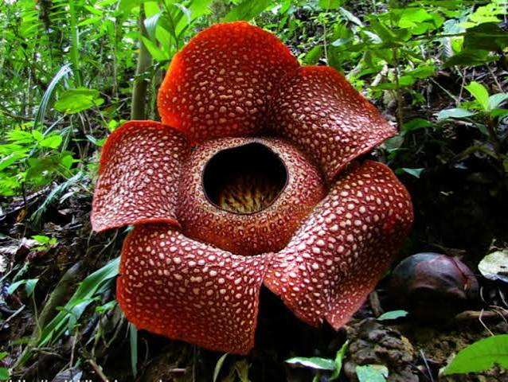
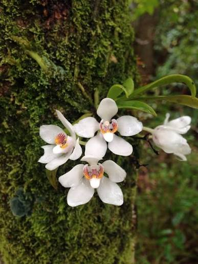
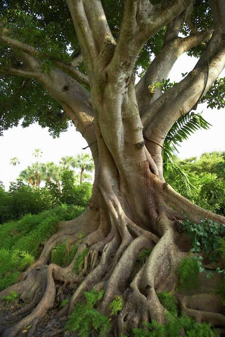

The beautiful plants of Papua New Guinea
Corspe flower

- Rafflesia arnoldii, also known as the corpse flower, is a parasitic plant native to the rainforests of Papua New Guinea and Indonesia.
It is famous for producing the largest individual flower in the world, which can reach over 3 feet in diameter. The flower emits a strong odor similar to rotting flesh, which attracts pollinators such as carrion flies.
Orchidaceae

- The Orchidaceae family is one of the largest families of flowering plants, with many species found in Papua New Guinea.
Orchids are known for their intricate and diverse flower structures, and they play an important role in the ecosystem by attracting specific pollinators.
Ficus

- Ficus is a genus of about 850 species of woody trees, shrubs, vines, epiphytes, and hemiepiphytes found throughout the tropics.
In Papua New Guinea, various species of Ficus are important for their ecological roles, providing food and habitat for numerous animal species.